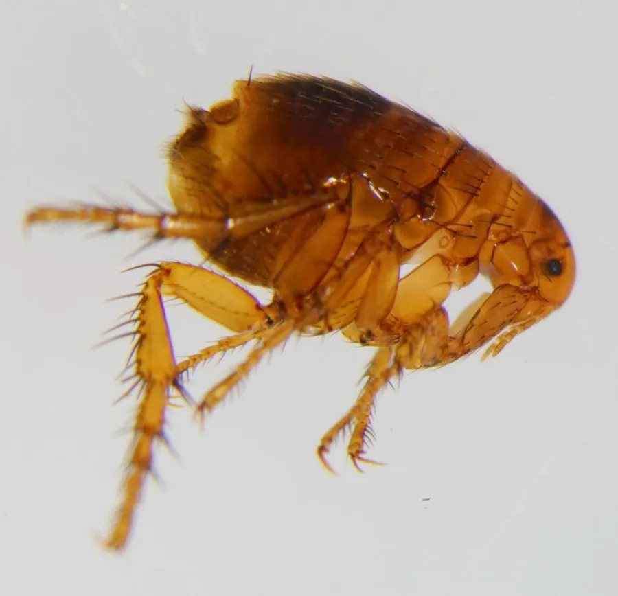

昆虫 · 动物界
人蚤 Pulex irritans

寄生于人及多种哺乳动物的跳蚤，体小而侧扁、后足善跳，靠刺吸血液为生，是鼠疫等疾病的传播媒介。
- 分类
- 门节肢动物门纲昆虫纲目蚤目科蚤科属蚤属
- 栖息环境
- 人类与哺乳动物身上，以及居所地毯、床铺和缝隙中
- 地理分布
- 全球分布，随人类与家养动物扩散到各地
- 保护级别
- 暂无评估
物种志
人蚤成虫体长 1.5–3.3 mm，体小且左右扁平，便于在毛发间穿行。它的体色为深褐色，没有翅膀，触角短，口器为刺吸式；后足特别发达，善于跳跃，可跳起自身长度的许多倍距离。
人蚤全球分布，主要寄生在人、犬、猫等哺乳动物身上，也见于居所的地毯、床铺和缝隙中。成虫吸血为生，每次可吸血数倍于自身体重，雌虫在寄主身上或环境中产卵，幼虫以成虫粪便中的有机物为食，经化蛹后羽化为成虫。人蚤叮咬会引起瘙痒和皮炎，历史上还参与传播鼠疫、地方性斑疹伤寒等疾病。它主要在温暖季节活跃，旅馆、老旧房屋和流浪动物聚集处更易滋生，防治需清洁环境并给宠物驱虫。
形态与习性
- 食性成虫刺吸血液，幼虫取食成虫粪便中的有机物
- 体长成虫 1.5–3.3 mm
- 外形体侧扁，无翅，后足发达善跳
- 生活史卵、幼虫、蛹、成虫四阶段，幼虫在环境中发育
- 危害叮咬引起瘙痒皮炎，可传播鼠疫等疾病
- 活动节律温暖季节更活跃
趣味知识
- 人蚤没有翅膀，但后足发达，能跳起自身长度许多倍的距离。
- 跳蚤成虫吸血，一次可吸数倍于自身体重的血。
- 人蚤在历史上参与传播鼠疫等传染病。
- 跳蚤幼虫以成虫粪便中的有机物为食。